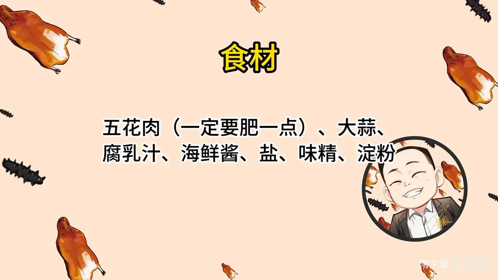
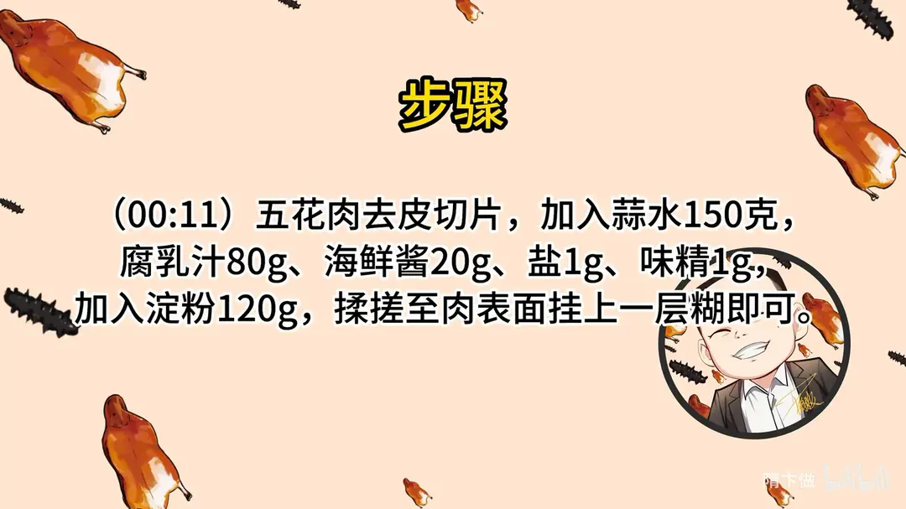
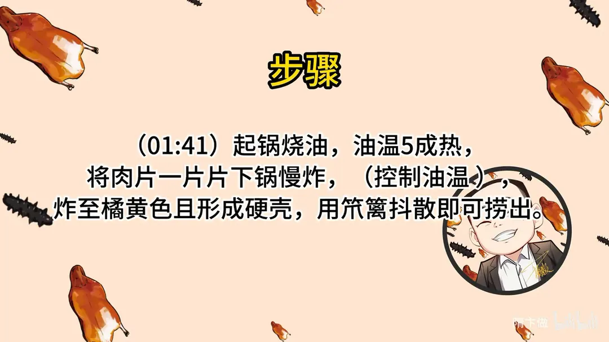
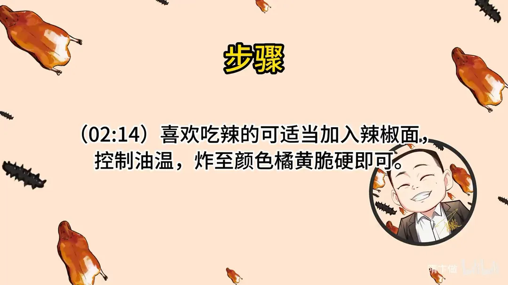

脆炸腐乳肉
隋卞一做。五花肉一定要肥一点，去皮切片，用 150g 蒜水加 80g 腐乳汁、20g 海鲜酱、1g 盐、1g 味精调味，再下 120g 淀粉揉搓到挂上一层糊。五成油温一片片下锅慢炸，炸到橘黄、外壳硬脆即可。
原视频：https://www.bilibili.com/video/BV1934y1K74f
食材
五花肉、腐乳汁、淀粉 等 9 样
| 类别 | 用料 | 用量 |
|---|---|---|
| 主料 | 五花肉 | 适量 |
| 其他 | 大蒜（打蒜水） | 150g 水 |
| 配料 | 腐乳汁 | 80g |
| 配料 | 海鲜酱 | 20g |
| 调料 | 盐 | 1g |
| 调料 | 味精 | 1g |
| 调料 | 淀粉 | 120g |
| 调料 | 辣椒面 | 适量（可选） |
| 其他 | 炸制用油 | 适量 |
步骤
- 切片调味：五花肉去皮切片，加入 150g 蒜水、80g 腐乳汁、20g 海鲜酱、1g 盐、1g 味精。
- 挂糊：加入 120g 淀粉，揉搓至肉表面挂上一层糊即可。
- 炸制：起锅烧油，油温五成热，将肉片一片片下锅慢炸，注意控制油温；炸至橘黄色且形成硬壳，用笊篱抖散即可捞出。
- 加辣可选：喜欢吃辣的可在糊里适当加入辣椒面，同样控制油温，炸至颜色橘黄、脆硬即可。
小贴士
- 五花肉要选肥一点的，炸出来才酥香不柴。
- 肉片必须一片片下锅，粘在一起就炸不透，硬壳也不均匀。
- 全程控制油温在五成左右，油温高了容易外焦里生。
讲解要点
难度：★★☆☆☆（新手可做，难点在油温——腐乳和蒜上色特别快）
为什么这么做
- 五花肉要肥一点：这道菜炸的过程会持续脱水，瘦肉多则发柴；肥肉里的油被腐乳、海鲜酱和蒜味「腌」住，反倒吃不出肥腻。
- 去皮再切片：肉皮炸不透、咬着发硬，还会把糊顶起来；去皮后厚度一致，受热才均匀。
- 只用蒜水，不用葱姜蒜：蒜水能渗进肉里，去异味比整粒蒜均匀，炸的时候也不用挑蒜末。
- 淀粉要多、慢慢往里对：脆炸靠的就是外层一层厚糊，粉薄了只有干硬的一层壳；分次加才能挂匀不起疙瘩。
- 味不能调太咸：炸制过程水分一走、咸味就浓缩，调的时候尝着「不太咸」正好。
- 五成油温、中火浸炸：腐乳汁和蒜上色极快，油温一高外面先黑、里面还没熟；低温下锅慢慢炸，颜色和熟度才同步。
- 一片片下锅：肉片带糊，粘成一坨就炸不透，硬壳也不均匀。
容易翻车
- 糊挂太薄：下锅只见肉不见糊，炸完发干发硬。
- 油温冲高：下锅立刻变深褐，里面还是生的。
- 刚下锅就搅：硬壳没形成就动，容易脱糊；等定型后用笊篱一抖就散开。
- 盐没算腐乳和海鲜酱的咸：这两样本身很咸，1g 盐已是上限。
原片尾卡




原片文案
AI 字幕校准稿
你们都知道炸的东西好吃，肉也很好吃。当我拿出一盘炸肉来，阁下应该如何应对？这个脆炸腐乳肉，一定要选肥一点的五花肉，太瘦的炸完不好吃。去皮之后切片，随意切，多大片、你喜欢多厚都行。
在家里做饭，经常会剩下一些稍微肥一点的肉，没关系，你就按我这个方法做。炸完之后绝对让它看着好吃、爱吃，吃完还要停不下来地吃。
把这个切好的五花肉放到盆里边。蒜水，就是包好的大蒜拿打碎机打成的蒜水，加上腐乳汁，然后加上海鲜酱。加多少比例不用记，都会给你们放到片尾。加点盐，加上一克味精。
因为这个菜炸的时候会慢慢脱水，所以味道就不能太咸，可以自己尝一口，别太咸。加入淀粉——脆炸，它外面会有一层很厚的糊，炸完之后才能酥脆，所以淀粉的量要稍微多一点。你就加这个蒜水，这个菜不用加葱姜蒜，蒜水已经足够把肉里的一些异味去掉。
加完淀粉之后，一定要让表面挂上一层糊，够一定厚度的时候才能下锅炸。淀粉慢慢地往里对，别一下子倒进去。拿起一块肉来提起来，表面一层糊很均匀地挂在上面就可以了。前面工作完了，下锅炸这一块就好了。
起锅烧油，把油烧到五成热，下锅炸肉。温度不能太高，温度高了它上色特别快——腐乳、蒜这两样上色都特别快，所以要控制好油温。拿手给它分开，一片一片地下。你看下锅之后一遇热，立马就变成这种橘红色，所以温度不能高。
关到中火慢慢炸就可以了。下完之后你也不用搭理它，一会儿炸到一定程度，拿笊篱一抖就开了。炸到定型，表面有一层薄薄的硬壳，然后再捞出来炸下一锅。下一锅小李是吃辣的，我给他加上辣椒面。
炸到什么程度可以出锅？炸到琥珀色就可以了，然后倒出来装盘。
好酥啊，这个淀粉的量合适。就这样，不吃点辣的？挺好吃的，有点像小酥肉，但跟小酥肉不一样。是南乳汁给它带来的味道——南乳汁、海鲜酱还有蒜汁，吃出来就是肉香、蒜香，还有海鲜酱的味道，比小酥肉多了一层不一样的复合味。
而且你看得出来哪块是特别肥的肉吗？看不出来，咱选的肉还挺肥的，但吃在嘴里面不腻。里边的腐乳、海鲜酱和蒜把肉味都腌进去了，所以肥肉这么炸也看不出来，吃着也挺好吃。大家可以回去试，一定是肥肉，大家记住了。